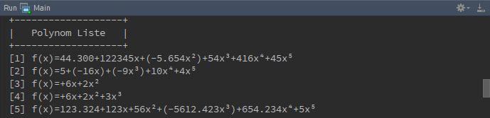
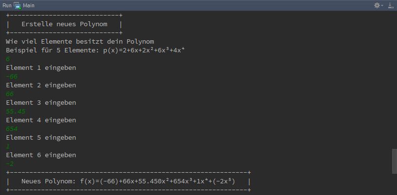
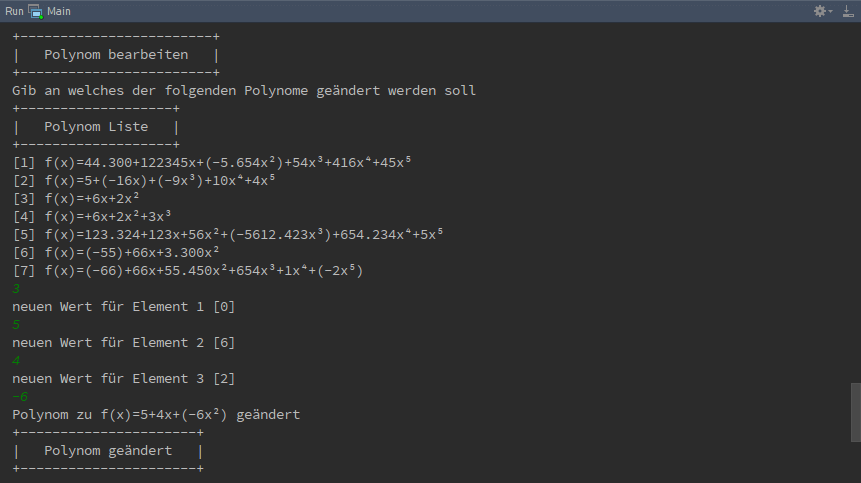
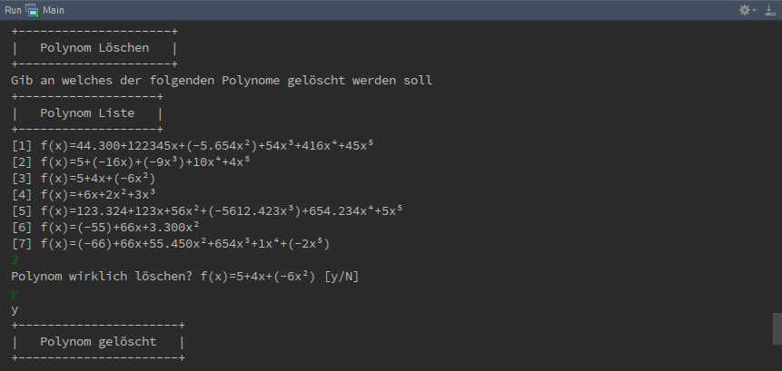
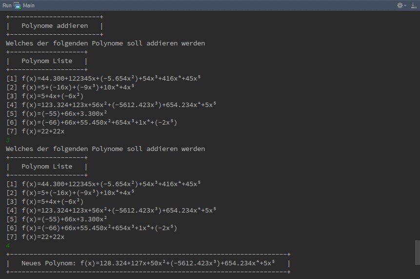
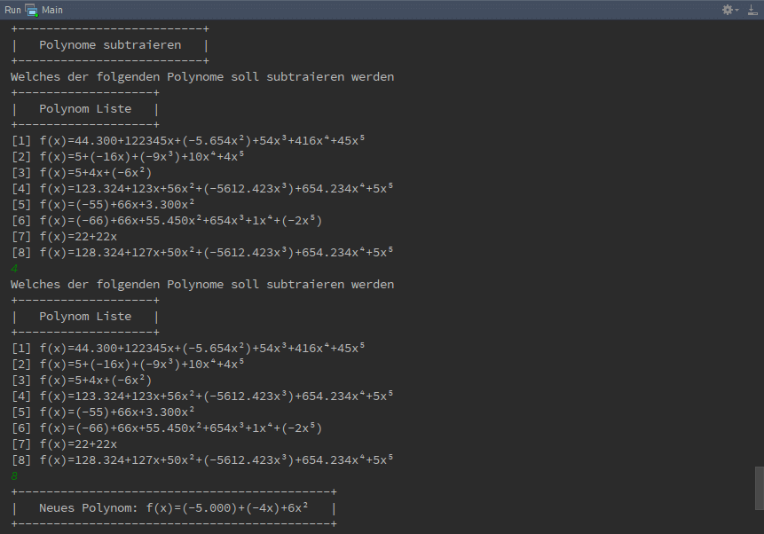
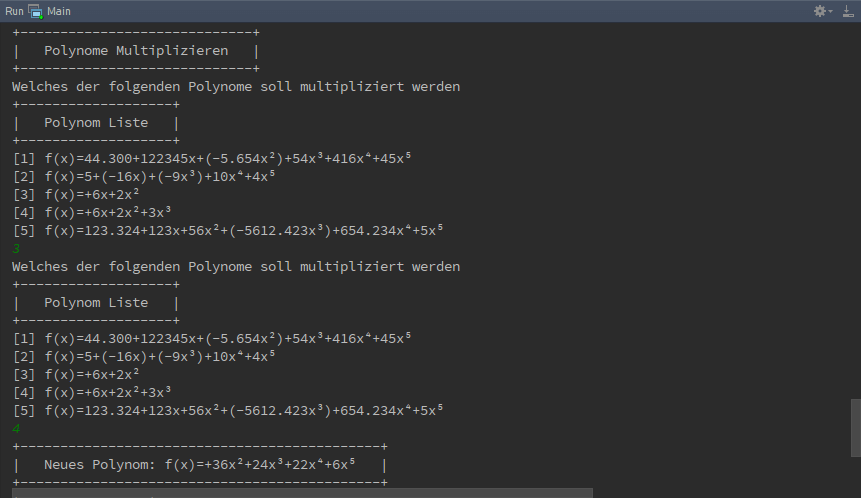
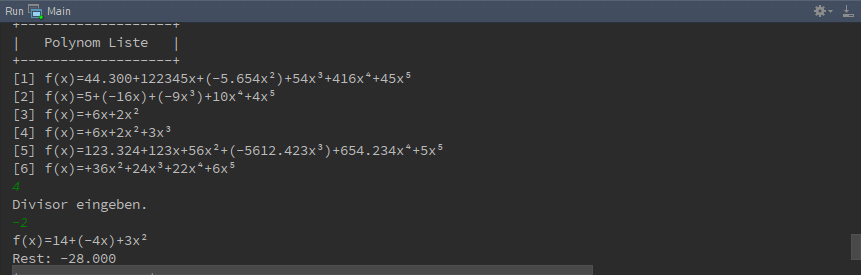
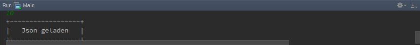

Hauptmenü¶
Inhalt¶
Das Hauptmenu besitzt 12 Optionen mit folgendem Inhalten.
| Option | Inhalt |
|---|---|
| 1 | Alle Polynome anzeigen die im Polynomarray hinterlegt sind. |
| 2 - 4 | Polynome hinzufügen, bearbeiten oder löschen. |
| 5 - 9 | Rechenoperationen mit Polynomen ausführen |
| 10 - 11 | Json Datei Laden und Sichern |
| 12 | Programm schließen |
Option 1: Alle Polynome anzeigen lassen¶
Zeigt alle Polynome die dem Programm aktuell zu verfügung stehen. Die Polynome werden untereinander aufgelistet und leicht lesbar Dargestellt. Die Zahl in der Eckigen Klammer [N] dient der Übersicht, wieviele Polynome zu verfügung stehen.
Option 2: Polynom hinzufügen¶
Als erstes wird aufgefordert die Länge des Polynomes ein zu geben. Die Länge heist in diesen Fall wie viele Elemente das Polynom besitzt. Elemente mit den Wert 0 werden mitgezählt!
- f(x)=5+(-16x)+(-9x³)+10x⁴+4x⁵ besitzt eine Länge von 6
- f(x)=123.324+123x+56x²+(-5612.423x³)+654.234x⁴+5x⁵ besitzt eine Länge von 6
- f(x)=+6x+2x²+3x³ besitzt eine Länge von 4
Nach der Eingabe der Länge wird aufgefordert jedes Element ein Wert aus dem Wertebereich der Reelen Zahlen ein zu geben. Das Kommer für Reele Zahlen muss mit ein Punkt eingeben werden, ansonsten wird aufgeforert das Element erneut ein zu geben.
{kind=link}
Option 3: Polynom bearbeiten¶
Um ein Polynom zu bearbeiten muss mindestens ein Polynom schon vorhanden sein. Sobald mindestens ein Polynom vorhanden ist, erscheint die Polynom Liste, die Zahl in der Eckigen Klammer [] vor jedes Polynom ist der Wert der eingeben werden muss, um dieses Polynom zu bearbeiten.
Nachdem das Polynom ausgewählt wurde, wird aufgefordert jedes Element ein neuen Wert zu zu weisen, der Wert in der Eckigen Klammer nach Element n [] ist der aktuelle Wert des Element und durch drücken der Enter Taste ohne weitere Werte ein zu geben bleibt der alte Wert unverändert.
Zum schluss wird das bearbeitete Polynom angezeigt.
{kind=link}
Option 3: Polynom löschen¶
Sobald Polynom löschen ausgewählt wurde, erscheint die Polynom Liste woraus entschieden werden muss welches Polynom gelöscht werden soll. Wenn die Zahl des Polynomes eingeben wurde, wird gefragt ob das Polynom wirklich gelöscht werden soll, nur wenn ‘y’ oder ‘Y’ eingeben wurde, wird das Polynom wirlich gelöscht.
{kind=link}
Option 5, 6 & 8: Mathematische Operationen¶
Das Eingabemuster bei Addition, Subtraktion und Multiplikation ist das gleiche.
Es erscheint die Polynom Liste wo ausgewählt werden muss welches Polynom an erster Stelle Addiert, Subtrahiert oder multipliziert werden soll und danach erscheint wieder die Polynom Liste wo ausgewählt welches Polynom an zweiter stelle der Optertion stehen soll.
Nach erfolgreicher eingabe wird die Mathematische Operation ausgeführt und das so neu erstandene Polynom wird angezeigt und in der Polynom Liste automatisch gesichert.
| Addtion | Subtraktion | Multiplikation |
|---|---|---|
|  |  |  |
Option 7: Polynom ableiten¶
{kind=link}
Option 9: Polynom Division¶
Die Polynom Division wird mit dem Hornerschema ausgeführt. Wie auch in anderen Polynom Mathematik Operationen muss zuerst aus der Polynom Liste das gewünschte Polynom ausgewählt werden und danach den Divisor.
Es wird nun das neue geteilelte Polynom ausgegeben und der Rest von der Division.
{kind=link}
Option 10: Json laden¶
Lädt die Polynome aus der Json Datei (festgelegt in Wizard am start des Programmes).
{kind=link}
{kind=link}
{kind=link}